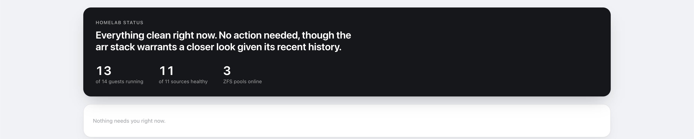
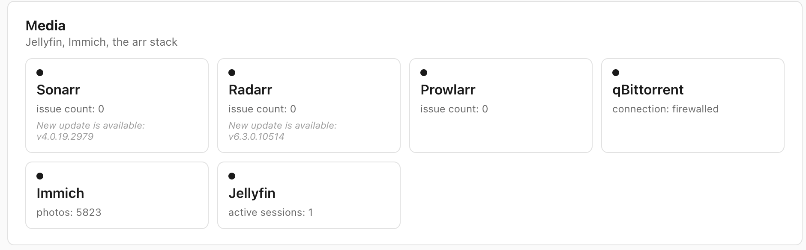
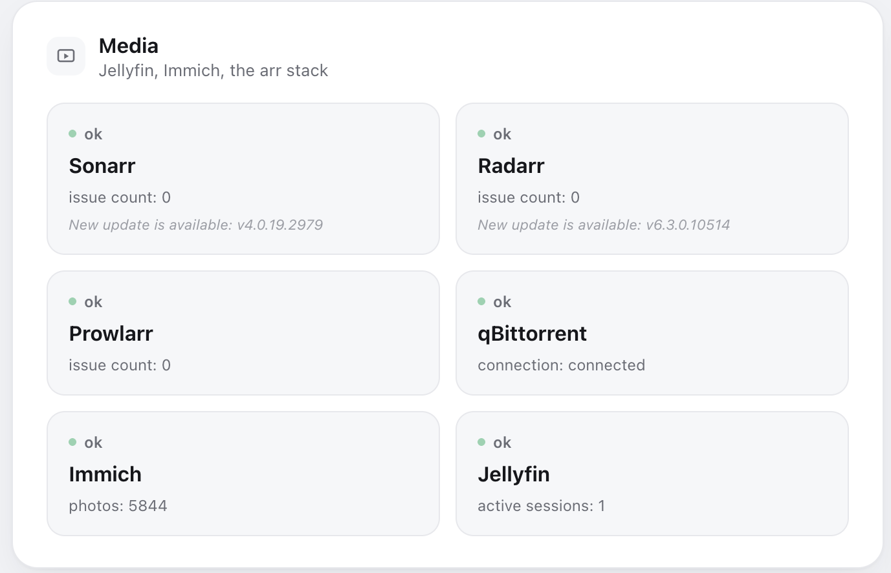
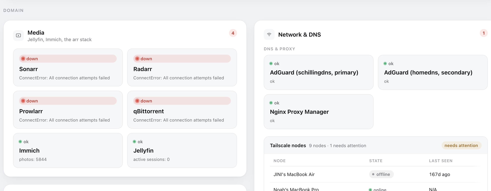

I ran the homelab dashboards worth running. None of them would ever be mine, so I built the one that was.
A weekend build, directed end to end, in my own design language, nothing extra. It doesn't just show status, it tells me in plain English what actually needs my attention.

The dashboard I had worked. It just wasn't mine.
I was already running a full homelab dashboard, a clean bookmark grid with a few basic status widgets. It worked fine. But it was a stock layout built for a version of a homelab that wasn't mine. Before touching a single line, I actually ran the popular alternatives myself, lived with them for a while, and judged what each one got right and where each one fell short. None of them were ever going to become genuinely mine without fighting their defaults the whole way. So instead of settling on the next off-the-shelf option, I directed a full custom replacement built to my own spec from day one.
Everything the old dashboard did, plus a layer that actually tells me what matters, plus my own design language, minus every bit of bloat I never used.
Ran the popular self-hosted dashboard tools directly before deciding none of them were worth adapting instead of building.
Most dashboards show you data. Mine tells you what matters.
Every homelab dashboard shows status: a green light, a red light, a wall of numbers. Mine watches everything running underneath it, servers, backups, containers, storage, and writes a plain-English verdict: calm, or exactly what needs a look and why. When everything's fine, it says so quietly and gets out of the way. Color only shows up when a problem has actually earned it, and the verdict is never color alone, always plain language too. That's a real accessibility call, not a style choice, nothing important here is readable by color vision alone. It's a permanent feature of the finished dashboard, running every day, not a build tool that disappears after launch, and it's the one thing none of the off-the-shelf options ship with.
AI did the building. I owned everything that outlives it.
AI did the building. I owned every decision that outlives the build: what it looks like, and what each credential is allowed to touch. Every credential starts locked to exactly what one piece needs, nothing more, widened only on a direct call, never by default.
I asked for a second opinion, on purpose. It caught a real mistake.
Partway through, I had two AI reviewers critique the live dashboard under different lenses: one purely visual, one purely how I actually use it day to day. Both had to actually go look at the running app, not just reason abstractly. Both came back with specific, uncomfortable findings, including one that caught the dashboard quietly breaking its own rule that color only shows up when it's earned. I didn't act on any of it automatically. Every recommendation went through the same question as everything else in this build: does this actually serve how I use it, or is it just noise.
Same standard applied to the build itself. An early layout that looked clean in a screenshot was actually hiding real dead space, a grid stretching every panel to match its tallest neighbor. Caught on a live look, not a report, and fixed before anyone but me ever saw it.

Looked clean in a screenshot. Live review found the dead space a static image didn't show.

Fixed and re-verified against the same uneven real data that exposed the problem.


Live, every day, since the weekend I shipped it.
It replaced the old dashboard the weekend I shipped it, and I've opened it first every morning since. When it stays quiet, everything's fine. The only time it uses color, something actually needs me. That's the whole product.